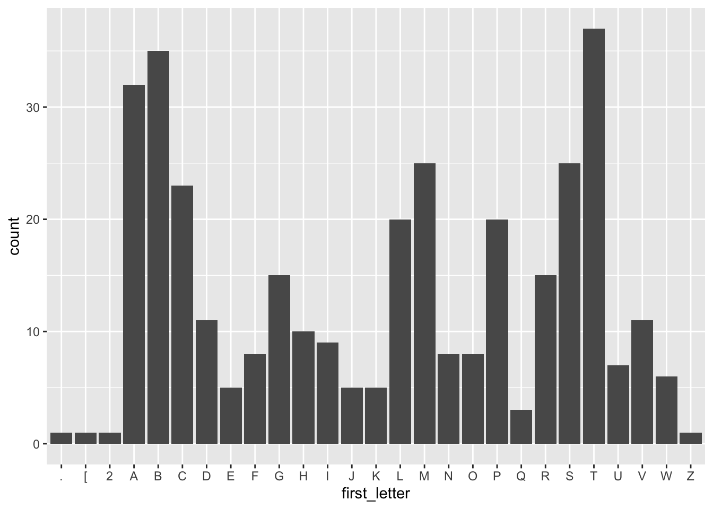

sqlite3 --version3.39.4 2022-09-07 20:51:41 6bf7a2712125fdc4d559618e3fa3b4944f5a0d8f8a4ae21165610e153f77aaplBefore class, you can prepare by reading the following materials:
Material for this lecture was borrowed and adopted from
At the end of this lesson you will be able to:
DBI, RSQLite, dbplyr packages for making SQL queries in Rsqlite3For this lecture, we will use Unix shell, plus SQLite3 or DB Browser for SQLite.
You can see if the command-line tool sqlite3 (also known as “SQLite”) is already installed with
sqlite3 --version3.39.4 2022-09-07 20:51:41 6bf7a2712125fdc4d559618e3fa3b4944f5a0d8f8a4ae21165610e153f77aaplIf not, you can install with homebrew or follow the instructions here:
You will need to install these R packages:
install.packages("DBI")
install.packages("RSQLite")
install.packages("dbplyr")We will load them here before kicking off the lecture.
library(tidyverse)
library(DBI)
library(RSQLite)
library(dbplyr)Data live anywhere and everywhere. Data might be stored simply in a .csv or .txt file.
Data might be stored in an Excel or Google Spreadsheet. Data might be stored in large databases that require users to write special functions to interact with to extract the data they are interested in.
A relational database is a digital database based on the relational model of data, as proposed by E. F. Codd in 1970.
Broadly relational databases are a way to store and manipulate information.

[Source: Wikipedia]
When we are using a spreadsheet, we put formulas into cells to calculate new values based on old ones.
When we are using a database, we send commands (usually called queries) to a database manager (a program that manipulates the database for us).
The database manager does whatever lookups and calculations the query specifies, returning the results in a tabular form that we can then use as a starting point for further queries.
Examples of database manager include:
A system used to maintain relational databases is a relational database management system (RDBMS).
We write queries in a language called Structured Query Language (SQL), which provides hundreds of different ways to analyze and recombine data.
Many database managers understand SQL but each stores data in a different way, so a database created with one cannot be used directly by another.
However, every database manager can import and export data in a variety of formats like .csv, .sql, so it is possible to move information from one to another.
Next, we will some example SQL queries that are common tasks for data scientists.
In this next few sections, we will use the SQLite database manager and interact with it interactively on the command-line with the command sqlite3.
In order to use the SQLite commands interactively, we need to enter into the SQLite console. So, open up a terminal, and run
Bash
cd data
sqlite3 survey.dbThe SQLite command is sqlite3 and you are telling SQLite to open up the survey.db. You need to specify the .db file, otherwise SQLite will open up a temporary, empty database.
. to distinguish them from SQL commands..exit or .quit. For some terminals, Ctrl-D can also work.. (dot) command, type .help.Before we get into using SQLite to select the data, let’s take a look at the tables of the database we will use in our examples:
Person: People who took readings, id being the unique identifier for that person.
| id | personal | family |
|---|---|---|
| dyer | William | Dyer |
| pb | Frank | Pabodie |
| lake | Anderson | Lake |
| roe | Valentina | Roerich |
| danforth | Frank | Danforth |
Site: Locations of the sites where readings were taken.
| name | lat | long |
|---|---|---|
| DR-1 | -49.85 | -128.57 |
| DR-3 | -47.15 | -126.72 |
| MSK-4 | -48.87 | -123.4 |
Visited: Specific identification id of the precise locations where readings were taken at the sites and dates.
| id | site | dated |
|---|---|---|
| 619 | DR-1 | 1927-02-08 |
| 622 | DR-1 | 1927-02-10 |
| 734 | DR-3 | 1930-01-07 |
| 735 | DR-3 | 1930-01-12 |
| 751 | DR-3 | 1930-02-26 |
| 752 | DR-3 | -null- |
| 837 | MSK-4 | 1932-01-14 |
| 844 | DR-1 | 1932-03-22 |
Survey: The measurements taken at each precise location on these sites. They are identified as taken. The field quant is short for quantity and indicates what is being measured. The values are rad, sal, and temp referring to ‘radiation’, ‘salinity’ and ‘temperature’, respectively.
| taken | person | quant | reading |
|---|---|---|---|
| 619 | dyer | rad | 9.82 |
| 619 | dyer | sal | 0.13 |
| 622 | dyer | rad | 7.8 |
| 622 | dyer | sal | 0.09 |
| 734 | pb | rad | 8.41 |
| 734 | lake | sal | 0.05 |
| 734 | pb | temp | -21.5 |
| 735 | pb | rad | 7.22 |
| 735 | -null- | sal | 0.06 |
| 735 | -null- | temp | -26.0 |
| 751 | pb | rad | 4.35 |
| 751 | pb | temp | -18.5 |
| 751 | lake | sal | 0.1 |
| 752 | lake | rad | 2.19 |
| 752 | lake | sal | 0.09 |
| 752 | lake | temp | -16.0 |
| 752 | roe | sal | 41.6 |
| 837 | lake | rad | 1.46 |
| 837 | lake | sal | 0.21 |
| 837 | roe | sal | 22.5 |
| 844 | roe | rad | 11.25 |
.tables and .schemaIn an interactive sqlite3 session,
.tables to list the tables in the database.schema to see the SQL statements used to create the tables in the database. The statements will have a list of the columns and the data types each column stores..schema
The output from .schema is formatted as <columnName dataType>.
Output
CREATE TABLE Person (id text, personal text, family text);
CREATE TABLE Site (name text, lat real, long real);
CREATE TABLE Survey (taken integer, person text, quant text, reading real);
CREATE TABLE Visited (id integer, site text, dated text);Thus we can see from the first line that the table Person has three columns:
The available data types vary based on the database manager - you can search online for what data types are supported.
SELECTFor now, let’s write an SQL query that displays scientists’ names.
We do this using the SQL command SELECT, giving it the names of the columns we want and the table we want them from.
Our query looks like this:
SQL
SELECT family, personal FROM Person;And the output looks like this:
Output
|family |personal |
|--------|---------|
|Dyer |William |
|Pabodie |Frank |
|Lake |Anderson |
|Roerich |Valentina|
|Danforth|Frank |The semicolon at the end of the query tells the database manager that the query is complete and ready to run.
We have written our commands in upper case and the names for the table and columns in lower case, but we don’t have to because SQL is case insensitive.
SQL
SeLeCt FaMiLy, PeRsOnAl FrOm PeRsOn;Output:
Output
|family |personal |
|--------|---------|
|Dyer |William |
|Pabodie |Frank |
|Lake |Anderson |
|Roerich |Valentina|
|Danforth|Frank |You can use SQL’s case insensitivity to distinguish between different parts of an SQL statement.
Here, we use the convention of using
SELECT and FROM)Whatever casing convention you choose, please be consistent: complex queries are hard enough to read without the extra cognitive load of random capitalization.
;
While we are on the topic of SQL’s syntax, one aspect of SQL’s syntax that can frustrate novices and experts alike is forgetting to finish a command with ; (semicolon).
When you press enter for a command without adding the ; to the end, it can look something like this:
Output
SELECT id FROM Person
...>
...>This is SQL’s prompt, where it is waiting for additional commands or for a ; to let SQL know to finish.
This is easy to fix! Just type ; and press enter!
SELECTRow and columns in a database table are not actually stored in any particular order.
They will always be displayed in some order, but we can control that in various ways.
We could swap the columns in the output by writing our query as:
SQL
SELECT personal, family FROM Person;Output
|personal |family |
|---------|--------|
|William |Dyer |
|Frank |Pabodie |
|Anderson |Lake |
|Valentina|Roerich |
|Frank |Danforth|or even repeat columns:
SQL
SELECT id, id, id FROM Person;Output
|id |id |id |
|--------|--------|--------|
|dyer |dyer |dyer |
|pb |pb |pb |
|lake |lake |lake |
|roe |roe |roe |
|danforth|danforth|danforth|* operatorAs a shortcut, we can select all of the columns in a table using *:
SQL
SELECT * FROM Person;Output
|id |personal |family |
|--------|---------|--------|
|dyer |William |Dyer |
|pb |Frank |Pabodie |
|lake |Anderson |Lake |
|roe |Valentina|Roerich |
|danforth|Frank |Danforth|There are several ways to query databases in R.
First, we will download a .sqlite database. This is a portable version of a SQL database.
For our purposes, we will use the
The database represents a “digital media store, including tables for artists, albums, media tracks, invoices and customers”.
From the Readme.md file:
Sample Data
Media related data was created using real data from an iTunes Library. … Customer and employee information was manually created using fictitious names, addresses that can be located on Google maps, and other well formatted data (phone, fax, email, etc.). Sales information is auto generated using random data for a four year period.
Here we download the data to our /data folder:
library(here)here() starts at /Users/stephaniehicks/Documents/github/teaching/jhustatprogramming2022if(!file.exists(here("data", "Chinook.sqlite"))){
file_url <- paste0("https://github.com/lerocha/chinook-database/raw/master/ChinookDatabase/DataSources/Chinook_Sqlite.sqlite")
download.file(file_url,
destfile=here("data", "Chinook.sqlite"))
}We can list the files and see the .sqlite database:
list.files(here("data"))[1] "Chinook.sqlite" "SRR1039508_subset_1.fastq"
[3] "SRR1039509_subset_1.fastq" "SRR1039512_subset_1.fastq"
[5] "SRR1039513_subset_1.fastq"The main workhorse packages that we will use are the DBI and dplyr packages.
Let’s look at the DBI::dbConnect() help file
?DBI::dbConnectSo we need a driver and one example is RSQLite::SQLite(). Let’s look at the help file
?RSQLite::SQLiteOk, so with RSQLite::SQLite() and DBI::dbConnect() we can connect to a SQLite database.
Let’s try that with our Chinook.sqlite file that we downloaded.
library(DBI)
conn <- DBI::dbConnect(drv = RSQLite::SQLite(),
dbname = here("data", "Chinook.sqlite"))
conn<SQLiteConnection>
Path: /Users/stephaniehicks/Documents/github/teaching/jhustatprogramming2022/data/Chinook.sqlite
Extensions: TRUESo we have opened up a connection with the SQLite database. Next, we can see what tables are available in the database using the dbListTables() function:
dbListTables(conn) [1] "Album" "Artist" "Customer" "Employee"
[5] "Genre" "Invoice" "InvoiceLine" "MediaType"
[9] "Playlist" "PlaylistTrack" "Track" From RStudio’s website, there are several ways to interact with SQL Databases. One of the simplest ways that we will use here is to leverage the dplyr framework.
“The
dplyrpackage now has a generalized SQL backend for talking to databases, and the newdbplyrpackage translates R code into database-specific variants. As of this writing, SQL variants are supported for the following databases: Oracle, Microsoft SQL Server, PostgreSQL, Amazon Redshift, Apache Hive, and Apache Impala. More will follow over time.
So if we want to query a SQL databse with dplyr, the benefit of using dbplyr is:
“You can write your code in
dplyrsyntax, anddplyrwill translate your code into SQL. There are several benefits to writing queries indplyrsyntax: you can keep the same consistent language both for R objects and database tables, no knowledge of SQL or the specific SQL variant is required, and you can take advantage of the fact thatdplyruses lazy evaluation.
Let’s take a closer look at the conn database that we just connected to:
library(dbplyr)
src_dbi(conn)src: sqlite 3.39.4 [/Users/stephaniehicks/Documents/github/teaching/jhustatprogramming2022/data/Chinook.sqlite]
tbls: Album, Artist, Customer, Employee, Genre, Invoice, InvoiceLine,
MediaType, Playlist, PlaylistTrack, TrackYou can think of the multiple tables similar to having multiple worksheets in a spreadsheet.
Let’s try interacting with one.
dplyr syntaxFirst, let’s look at the first ten rows in the Album table using the tbl() function from dplyr:
tbl(conn, "Album") %>%
head(n=10)# Source: SQL [10 x 3]
# Database: sqlite 3.39.4 [/Users/stephaniehicks/Documents/github/teaching/jhustatprogramming2022/data/Chinook.sqlite]
AlbumId Title ArtistId
<int> <chr> <int>
1 1 For Those About To Rock We Salute You 1
2 2 Balls to the Wall 2
3 3 Restless and Wild 2
4 4 Let There Be Rock 1
5 5 Big Ones 3
6 6 Jagged Little Pill 4
7 7 Facelift 5
8 8 Warner 25 Anos 6
9 9 Plays Metallica By Four Cellos 7
10 10 Audioslave 8The output looks just like a data.frame that we are familiar with. But it’s important to know that it’s not really a dataframe. For example, what about if we use the dim() function?
tbl(conn, "Album") %>%
dim()[1] NA 3Interesting! We see that the number of rows returned is NA. This is because these functions are different than operating on datasets in memory (e.g. loading data into memory using read_csv()). Instead, dplyr communicates differently with a SQLite database.
Let’s consider our example. If we were to use straight SQL, the following SQL query returns the first 10 rows from the Album table:
SELECT *
FROM `Album`
LIMIT 10In the background, dplyr does the following:
To better understand the dplyr code, we can use the show_query() function:
Album <- tbl(conn, "Album")
show_query(head(Album, n = 10))<SQL>
SELECT *
FROM `Album`
LIMIT 10This is nice because instead of having to write the SQL query our self, we can just use the dplyr and R syntax that we are used to.
However, the downside is that dplyr never gets to see the full Album table. It only sends our query to the database, waits for a response and returns the query. However, in this way we can interact with large datasets!
Many of the usual dplyr functions are available too:
select()filter()summarize()and many join functions.
Ok let’s try some of the functions out. First, let’s count how many albums each artist has made.
tbl(conn, "Album") %>%
group_by(ArtistId) %>%
summarize(n = count(ArtistId)) %>%
head(n=10)# Source: SQL [10 x 2]
# Database: sqlite 3.39.4 [/Users/stephaniehicks/Documents/github/teaching/jhustatprogramming2022/data/Chinook.sqlite]
ArtistId n
<int> <int>
1 1 2
2 2 2
3 3 1
4 4 1
5 5 1
6 6 2
7 7 1
8 8 3
9 9 1
10 10 1Next, let’s plot it.
tbl(conn, "Album") %>%
group_by(ArtistId) %>%
summarize(n = count(ArtistId)) %>%
arrange(desc(n)) %>%
ggplot(aes(x = ArtistId, y = n)) +
geom_bar(stat = "identity")
Let’s also extract the first letter from each album and plot the frequency of each letter.
tbl(conn, "Album") %>%
mutate(first_letter = str_sub(Title, end = 1)) %>%
ggplot(aes(first_letter)) +
geom_bar()
Here are some post-lecture questions to help you think about the material discussed.
Using the survey.db database:
.schema to identify column that contains integersname column from the Site table.SELECT personal, family FROM person;or
select Personal, Family from PERSON;